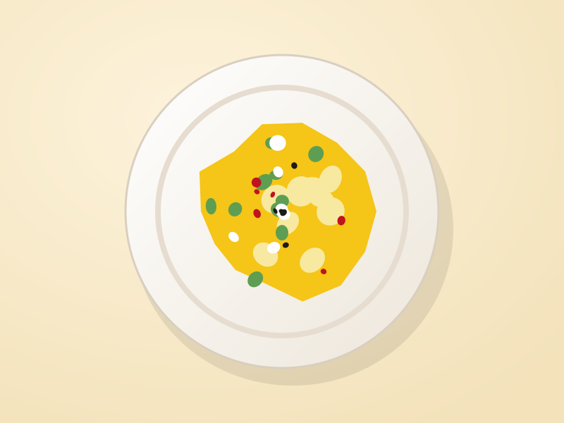
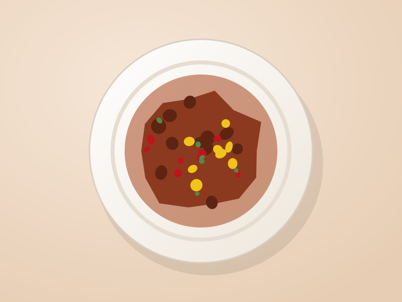
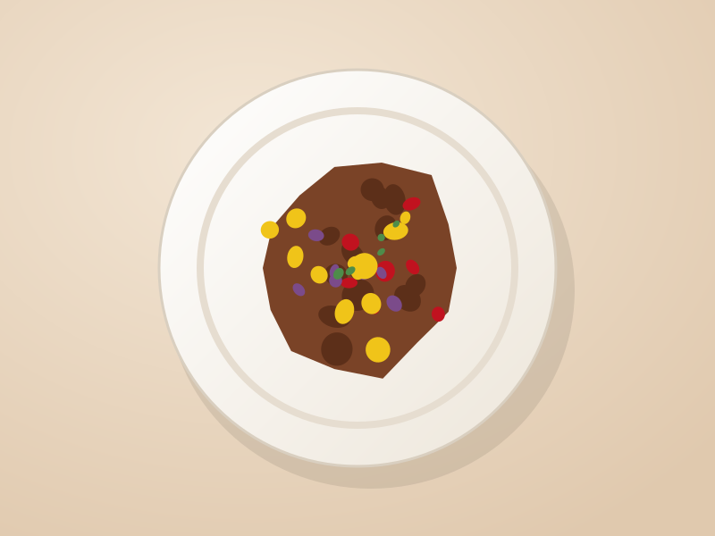
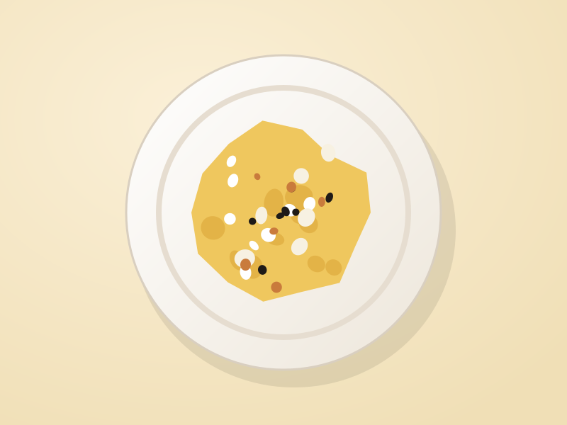
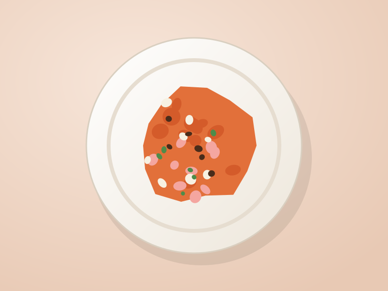
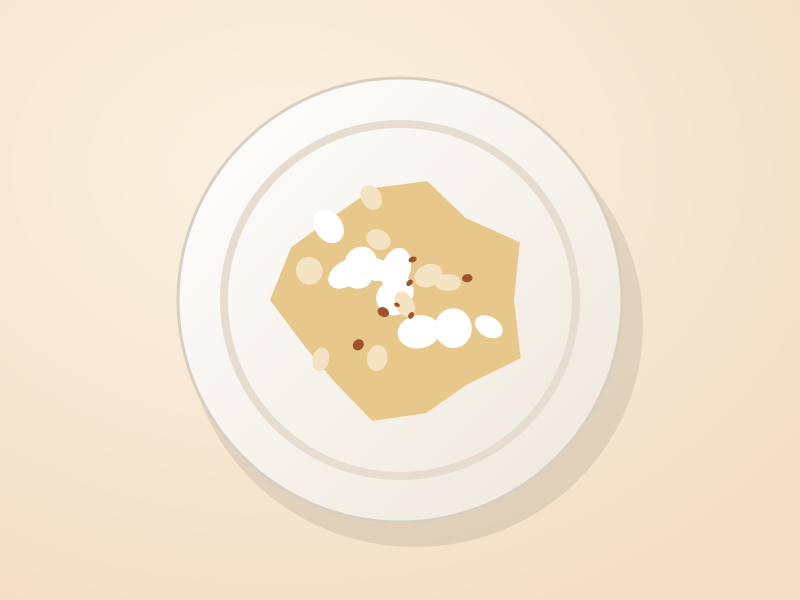
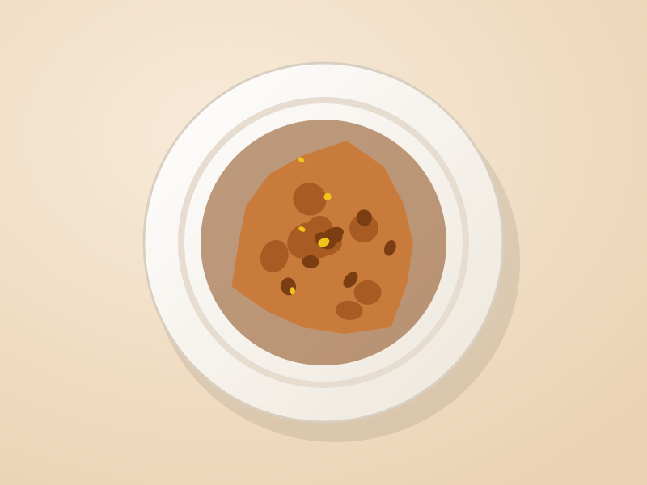

Ceviche Clásico
Pescado del día en leche de tigre, cebolla morada, choclo, camote glaseado y cancha serrana.
$12.900
Picante
Entradas, fondos, postres y bebidas
Preparamos todo al momento con pescado fresco, ajíes del norte del Perú y verduras de la Vega. Los precios están en pesos chilenos e incluyen IVA.
Pescado del día en leche de tigre, cebolla morada, choclo, camote glaseado y cancha serrana.

Papa amarilla prensada con ají amarillo y limón, rellena de pollo o cangrejo, con palta y huevo de codorniz.

Brochetas maceradas en ají panca y vinagre, a la parrilla, con papa dorada y salsa de rocoto.

Lomo fino salteado al wok con cebolla, tomate y sillao, acompañado de papas fritas y arroz graneado.

Gallina deshilachada en crema de ají amarillo con nueces y pan, sobre papa sancochada y arroz blanco.

Arroz cremoso con ají panca, langostinos, calamar, machas y un toque de vino blanco.

Manjar blanco de leche fresca coronado con merengue al oporto y canela molida.

Buñuelos de zapallo y camote fritos al momento, bañados en miel de chancaca con higo y anís.
Pisco quebranta, limón de Pica, jarabe de goma y clara de huevo, con unas gotas de amargo de angostura.
Maíz morado hervido con piña, membrillo, canela y clavo, servido bien frío. Jarra de un litro.
¿Alergias o alguna intolerancia? Avísale a quien te atienda y adaptamos el plato. Tenemos opciones sin gluten y vegetarianas.